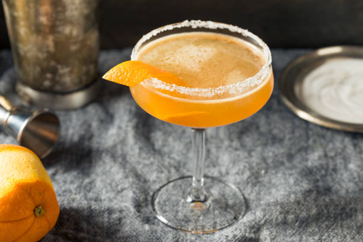

A Sidecar in a sugar rimmed coupe glass with orange garnish
As with many cocktails the origin of the Sidecar is unclear, but it is thought to have been invented at the end of WW1 in either London or Paris. The Sidecar is a cocktail traditionally made with brandy, orange liqueur, and lemon juice. It became popular in Paris and London after WW1, then all over the world shortly after.
Ingredients
1 1/2 ounces Remy Martin VSOP or 1738 (1738 has a fruity sweeter profile)
3/4 ounce Cointreau
3/4 ounce fresh lemon juice
Orange twist garnish
Sugar rim garnish
Directions
Use an orange or lemon to wet coupe glass rim and roll in sugar to coat.
Fill a shaker with ice. Add the Remy, Cointreau, fresh lemon juice and shake until well chilled.
Strain into your prepared coupe glass.
Garnish with an orange twist.
DRINK RESPONSIBLY, NEVER DRIVE WHILE UNDER THE INFLUENCE!